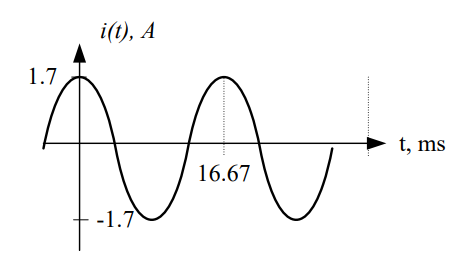

Objective 1.3#
LO# |
Description |
|---|---|
1.3 |
I can calculate the voltages, currents, instantaneous power, and average power associated with devices in a simple AC-powered circuit using tools such as KVL, KCL, voltage and current dividers, Ohm’s Law, RMS values, and the power equation. |
Electrical Signals#
Our world is filled with signals. We raise our hand to signal the instructor when we know the answer to a question. The light turns red to signal we should stop. The phone rings to signal we should answer it. Generally, a signal is something that conveys information.
In the world of electrical engineering, we use signals to convey information and transmit power. The TV signal that comes to our homes via cable, satellite dish, or old-fashioned antenna, is an electrical signal that contains video images and the sound that goes with them. When we click our mouse, an electrical signal is processed by our computer’s microprocessor to tell the correct program what to do. In our combat aircraft, electrical signals are used to release bombs and missiles at the proper time to cause the most damage to our adversaries. Our communication systems use electrical signals to link weapon systems and warfighters, thereby maintaining battlefield situational awareness. Our power grid uses a very specific signal to transmit power efficiently over long distances.
In the previous lessons, we examined how an electrical signal may be used to deliever power to a load, such as a light bulb, and in doing so, we used voltage sources that always provided the same voltage to the circuit. However, in this lesson, we will introduce a voltage source that can change its voltage over time. This new voltage source will allow us to send different electrical signals to our load in order to transmit power or convey information. This lesson will focus on using these new electrical signals to transmit power, while blocks 3 and 4 will focus on how these signals may be used to convey information.
Example Problem 1:#
A programmable laser pointer is modeled as the following circuit. Graph the current provided by the voltage source as a signal with respect to time.
Understand: This is a review of material from the last lesson. We have a source connected to a load, which consists of multiple resistors in both series and parallel.
Identify Key Information:
Knowns: VS = 1.5 V, and the resistances in the load.
Unknowns: REQ and IS.
Assumptions: The source provides all the current needed by the load.
Plan: Before we can graph the source current with respect to time, we need to calculate it. First, we will find the equivalent resistance, then we can use Ohm’s Law to find the current provided by the source.
Solve: R2 and R3 are connected in parallel. We can combine them using the two-resistor equation for equivalent resistance:
This resultant 250-Ω resistor is now in series with R1. The equivalent resistance is:
We can now redraw the simplified circuit:
Since, by KVL, all 1.5 V drops across REQ, the current through REQ is
Answer: Since there is nothing in the circuit to make the current change over time, the graph of the current signal is:
The first thing to notice about this graph is that it is boring – it never changes over all time. This is because it is a DC signal, where DC stands for Direct Current. DC signals, by definition, do not change over time; their voltages and currents stay the same for all time. So far, all of the voltages and currents we have used have been DC signals.
Although they are boring, DC signals are very useful. Many of the electrical and electronic devices in our lives run off of DC power, including flashlights, cell phones, and laptops. In general, if it has a battery, it is DC-powered. Also, if it requires an AC adapter (like your computer), it is DC powered. AC stands for Alternating Current, and as the name suggests, AC signals change over time. In circuits with AC signals, the voltage and current will change over time. As we will see in block 2, AC signals enable efficient transmission of electrical power. For this reason, the power grid uses AC signals, resulting in AC signals coming out of your wall outlet and requiring that you use an AC adapter with your computer.
Some devices only use DC power while some use only AC; it largely depends on the device, its purpose, and how it operates.
Were we to graph the DC signals from any of these devices, the graph would look nearly identical to the one above. The units and values might change, but otherwise, it would be the same boring straight line.
AC Signals#
On the other hand, AC signals are more interesting to examine since they vary with time. Frequently, AC signals are sinusoidal; therefore, we use the following standard equation form to describe them:
Where:
- \(V_{Bias}\) is the DC component of the signal, also known as the average value (Vavg);
- \(V_{m}\) is the amplitude of the signal, or maximum excursion from the average value;
- 360° is used to convert the argument of the cosine into an angle in degreees. This could alternatively be shown as a radian conversion (2π);
- f is the frequency of the signal or the number of times it cycles in a second. Frequency has units of Hertz (Hz)[1] and, oftentimes, will be preceded by a “k” or an “M” for kilohertz or megahertz. Note: Hertz is equal to\(\ 1/sec\);
- t is time (in seconds) and serves as the independent variable in the equation;
- φ is the phase shift and defines how far shifted (in time) the cosine’s peak is from zero seconds. This variable is nearly always zero in this text and therefore usually omitted;
- V is the signal’s units. In this equation, the signal is a voltage, but it could be a current.
We will also use the same format for current; however, in doing so, we need to replace \(v(t)\) with \(i(t)\), \(V_{Bias}\) with \(I_{Bias}\), and units of volts with amps.
This standard format is portrayed graphically in Figure 1.

Figure 1: Graphical representation of the AC standard form
In order to graph the signal, we must introduce two more parameters. First, the period of the signal, T, is the time the signal takes to complete a cycle and is given by:
As mentioned on the previous page, frequency has units of Hertz, which is equivalent to 1/sec. Therefore, units of time are given when dividing by frequency.
Secondly, the time delay, τ, is the amount of time between the first positive peak and the origin (t = 0 s). This variable is found by converting the phase shift (if there is one) from an angle (in degrees) to time (in seconds):
In the phase shift equation, dividing the phase shift by 360° produces a ratio, and this ratio represents the delay within one period (remember 360° is the amount of degrees in one period). Multiplying this ratio by the period, \(T\), gives us the time delay.
Example Problem 2:#
A building is wired with AC power with a voltage of:
If two 200-Ω light bulbs are connected in parallel to this source, graph the signal of the current drawn from the source.
Understand: Although we are dealing with a sinusoidal input signal, all of the rules we’ve learned for resistive circuits still apply! Therefore, we can solve this problem by finding the equivalent resistance and using Ohm’s Law to find the source current.
Identify:
Knowns: The input signal is sinusoidal, v(t) = 170 cos(360° * 60 Hz * t) V, the resistances of the load are also known.
Unknowns: The source current, is(t).
Assumptions: Our tools for analyzing resistive circuits still apply.
Plan: Although a sinusoidal input signal seems much more daunting than any of the DC voltages we’ve been using, the math is fairly straightforward. We will find the equivalent resistance of the load, then use Ohm’s Law to find the source current, is(t). Finally, we will use the standard equation to draw the graph of the current.
Solve: The equivalent resistance of the two resistors is:
This result leads us to an interesting shortcut: two resistors of the same value in parallel always simplify to half of their resistance. Now, we can redraw the circuit as we have been doing:
Since these two devices are in parallel, we know that all of the source voltage drops across REQ. In other words,
Applying Ohm’s Law, gives us:
We now need to graph the current. Let’s compare it to the standard equation format:
Notice the current doesn’t have a bias (IBias, DC component) or phase shift so we don’t need to worry about them. Since the original voltage source didn’t have a bias, the current doesn’t have a bias.
The amplitude is 1.70 A, which is a measure of how far the signal gets from the average value. Since the average value (IBias) for this signal is zero, we know that the signal will vary from -1.70 A to 1.70 A. This is a direct result of the fact the cosine itself varies from -1 to 1.
The frequency of the signal is 60 Hz. We can quickly solve for the signal’s period:
Answer: The graph of the source current signal is

In the previous example, the signal did not have a bias, and we could determine the amplitude by knowing that the cosine function varies from -1 to 1. However, calculating these parameters are slightly more difficult when we have a bias. Assuming we have a voltage signal, we can use the following equation to solve for the bias.
In this equation, \(v_{\max}\) and \(v_{\min}\) are the maximum and minimum values, respectively, for the signal. The bias is just the average value of the signal, and for that reason, the bias equation is just the average of the maximum and minium values. The following equation is helpful in solving for the amplitude, \(V_{m}\).
By subtracting the minimum value from the maximum value, the amplitude equation calculates the total spread of the signal, and dividing the total spread by 2 gives us half of the spread, which is the maximum excursion from the average value.
Before moving on, let’s expand a little on the standard equation for a more complex sinusoidal voltage signal.
Notice this is the same thing we had before, but now we allow for more than one cosine term. Most real-world signals, including voice and music signals, can be represented by a sum of many cosine terms. However, as you can imagine, plotting more than one term at a time can become extremely complicated. In all reality, we will rely on computer tools like MATLAB® to do this. In a future lessons, we will learn a technique that simplifies interpreting and processing these more complicated expressions.
AC Power#
The concept of power for AC signals can be difficult to understand because the voltages and currents are constantly changing, meaning the power is always chaning as well. If we simply take the voltage across and the current through a device and multiply them together, we get something known as instantaneous power:
Let’s use the values from the example above to explain this concept. Looking at the voltage and current at t = 0 s, we have v(0) = 170 V while i(0) = 1.70 A. At this instant in time, the power output from the source is:
As time progresses, both the voltage and the current drop off. At t = 4.167 ms, both the current and voltage have gone to zero and the power output at that instant is also zero. Continuing onward, at t = 8.333 ms, the voltage and current have reached their negative peaks. The power at that instant is:
If we graph the function p(t), we get

Figure 2: Voltage, current, and power over time for an AC signal
Figure 2 shows that the power of an AC signal varies over time and even drops to 0 W at regular intervals. Interestingly, the AC signal plotted here is the same as the one used in our power grid. You may be thinking, “I can’t see the lights in my room flickering as the power graph suggests.”. Fortunately, you can test this if you have a smart phone with slow motion recording capabilities[2]. Take a “SLO-MO” recording of the lights in your dorm room for a few seconds, and then play the video back to yourself. Hopefully, you can see the lights flickering. This is visual proof that AC signals exist in real life!
While we might occasionally want to know the power output at specific points in time, generally it’s not what we need. What we want is a way to measure the average power.
Unfortunately, we can’t simply multiply the average voltage by the average current to get average power. Doing this would result in an average power of 0 W because the average voltage and current, as seen in Figure 2, are both zero. We know this can’t be true because we just saw the lights flickering in the “SLO-MO” recording. Also, the power signal in Figure 2 is centered above 0 W, meaing the correct average power has to be some positive number.
In order to calculate average power, we must introduce a new concept - the root-mean-square (RMS) value. The RMS value for a voltage signal is defined as follows:
In AC electrical circuits, the RMS value represents the magnitude of the equivalent DC voltage (or current) that would dissipate the same amount of power in a resistor. Sometimes, we will refer to the RMS value as the effective value because it is the effective DC value for that AC voltage or current. For sinusoidal signals, the effective value or RMS value can be simplified as follows:
where the Vm stands for amplitude of the sinusoidal signal. The same equation is also used to calculate the RMS value for current; all we have to do is replace the \(V_{RMS}\) with \(I_{RMS}\), \(V_{BIAS}\) with \(I_{BIAS}\), and the voltage amplitude with the current amplitude. For nearly all of our signals, the bias will be zero, which gives us:
Now we can use these values to calculate the average power produced by the system. The equation for power is the same as before, but now we use the RMS values to get average power:
So for our example above,
This answer makes perfect sense! Look at the graph of the power in Figure 2. If you had to choose an average value, what value would you choose? Around 150 W? If we could zoom in on the graph, we would see that the average value is exactly 144.5 W.
The voltage used in Example Problem 2 has a frequency of 60 Hz and a voltage of 120 VRMS (after rounding down from 120.2 VRMS). As stated earlier, this is exactly the voltage we get out of our wall outlets in the United States. When we say the wall outlet gives us 120 volts, what we really mean is that it gives 120 volts RMS. In actuality, the voltage signal varies from 170 V to -170 V, at a frequency of 60 cycles per second (Hz).